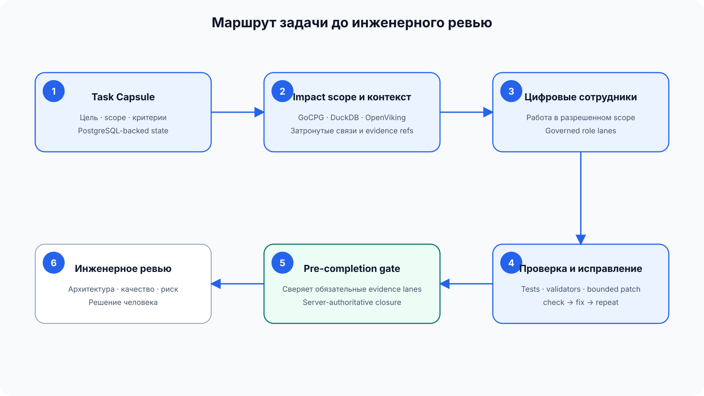
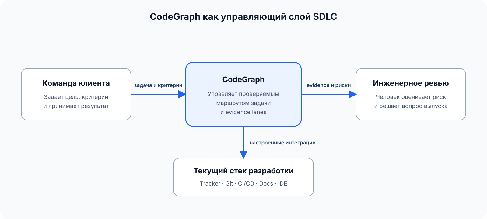
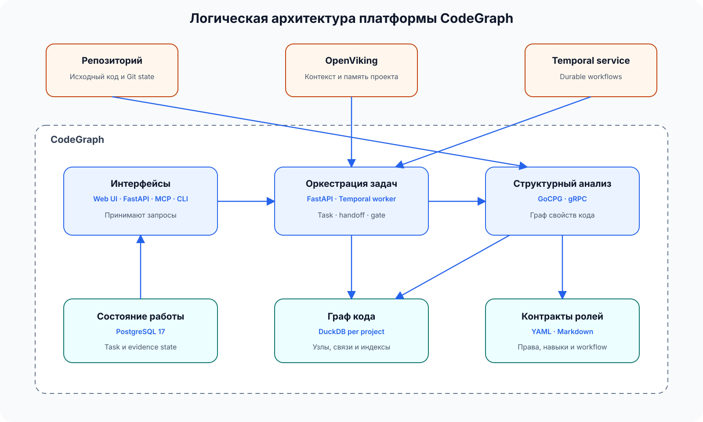
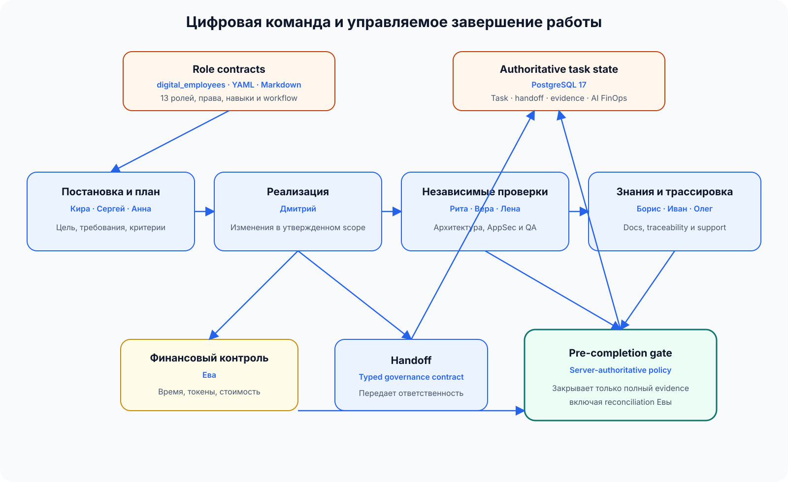
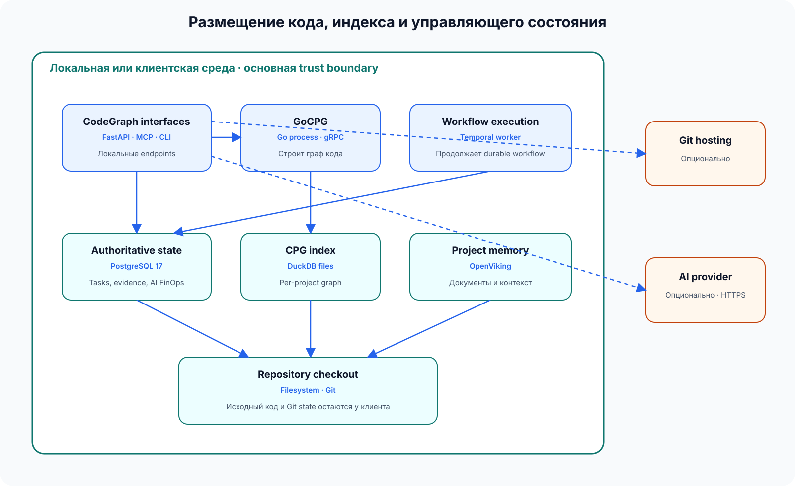

Без сквозного маршрута
- инженер вручную восстанавливает связи между задачей и кодом;
- контекст повторно собирается на каждом этапе;
- результат теста становится новой ручной задачей;
- ревью начинается с восстановления истории работы.
Архитектура и бизнес-ценность
Платформа связывает задачу с кодом и рабочими системами, выполняет разрешенные шаги, проверяет результат и передает его инженеру на ревью.
Меньше ручной работы. Быстрее готовность к ревью. Контроль остается у команды.
CodeGraph — не еще один чат с репозиторием и не замена разработчика. Это управляющий слой для повторяемой работы между задачей и инженерным ревью.
Вход: задача, критерии готовности, разрешенный рабочий контекст и границы действий.
Работа: поиск затронутых частей продукта, план, ограниченные изменения, проверки, исправления и повтор.
Выход: правки, результаты проверок, связи с требованиями и конкретные остаточные риски для решения инженера.
Подтверждено архитектурой Числа описывают текущую модель процесса и конфигурацию ролей, а не заявленный экономический эффект.
У фичи есть время написания кода и полный срок до клиента. Разница складывается из поиска связей, ожидания владельцев, повторных проверок, разбора ошибок и возвратов после ревью. CodeGraph работает именно с повторяемой частью этого пути.
150 разработчиков × 1 час × 46 недель × 2 500 ₽ = 17,25 млн ₽ в год
Это оценка масштаба ручной работы, а не подтвержденная экономия CodeGraph. Фактический эффект определяется только измерением до и после пилота.
Работа начинается не с просьбы «напиши код», а с цели и условий готовности. Платформа должна понимать, что можно изменить, какие проверки обязательны и где требуется решение человека.

Трекер, Git, CI/CD, документация и IDE остаются на месте. CodeGraph связывает доступные сведения и действия, но не делает вид, что все корпоративные системы уже подключены без настройки.

| Система | Что использует CodeGraph | Как подтверждено |
|---|---|---|
| Git и workspace | Файлы, Git state, diff, clone/fetch при настроенной интеграции | Filesystem, Git process и provider API |
| CI/CD | Инкрементальное обновление графа и внешние проверки | `gocpg ci-update` и process invocation |
| IDE и AI agents | Навигация, диагностика, контекст и governed operations | ACP, LSP и MCP |
| Веб-интерфейс | Проекты, задачи, результаты и контроль | React UI и FastAPI |
| Git hosting | Метаданные, checkout и webhooks при настройке | SourceCraft, GitVerse, GitHub или GitLab integration paths |
Ответственность разделена по трем вопросам: как клиент обращается к системе, как выполняется и закрывается работа, где хранятся структурные и управленческие данные.

| Область | Фактическая реализация | Роль в результате |
|---|---|---|
| Интерфейсы | Web UI, FastAPI, MCP, CLI, ACP, LSP | Принимают запросы и возвращают результаты в подходящем для клиента протоколе. |
| Управление работой | FastAPI server, shared `src/digital_employees`, Temporal worker | Создают Task Capsule, handoff и durable operations; FastAPI владеет authoritative closure. |
| Структура кода | GoCPG server/CLI | Парсит поддерживаемые языки, строит CPG и отвечает на graph/navigation queries. |
| Граф проекта | DuckDB per project | Хранит узлы, связи, индексы, parse scope, Git/file state и findings. |
| Состояние работы | PostgreSQL 17, SQLAlchemy, Alembic | Хранит пользователей, проекты, tasks, handoffs, evidence, runs и AI FinOps. |
| Память проекта | OpenViking | Хранит опубликованные документы и сессионный контекст; не является authority завершения. |
| Контракты ролей | YAML и Markdown в `digital_employees/` | Определяют identities, persona, capabilities, skills и workflow templates. |
Почему это разделение важно: граф кода можно перестроить из репозитория, память проекта можно обновить из разрешенных источников, а решение о завершении задачи остается в транзакционном контуре Task Capsule и evidence.
Цифровые сотрудники CodeGraph — это не тринадцать отдельных серверов. Это именованные роли с границами ответственности, правами, навыками и обязательным результатом. Они работают через общую библиотеку и runtime-контейнеры CodeGraph.

Кира, Сергей, Анна: проблема, пользовательский результат, требования, критерии, Task Capsule и маршрут передачи.
Дмитрий: ограниченные изменения и сфокусированные проверки внутри утвержденного scope.
Рита, Вера, Лена: архитектурное соответствие, безопасность и качество по явным критериям.
Борис, Иван, Олег: документация, трассировка и понятное объяснение результата для пользователей и операторов.
Марина, Глеб: workforce governance и эксплуатационная готовность включаются, когда задача меняет соответствующие поверхности.
Ева: время, токены, стоимость, полнота атрибуции и обязательная финальная сверка.
Сгенерировать правку недостаточно. После нее остается работа: запустить проверку, разобрать результат, исправить ошибку, повторить и собрать доказательства для ревью.
MCP дает AI coding agents доступ к графу, задачам, handoff и advisory checks. Этот канал удобен для работы, но не является единоличным владельцем итогового статуса.
FastAPI сверяет Task Capsule, обязательные handoff, review, AppSec, QA, docs, traceability и финансовую reconciliation. Только серверный переход создает authoritative closure packet.
CodeGraph поддерживает локальный и контейнерный режимы. Repository checkout и проектный DuckDB остаются в рабочей среде; PostgreSQL хранит операционное состояние, OpenViking — контекст, а Temporal выполняет durable workflows.

| Данные | Основное место | Кто пишет | Можно перестроить |
|---|---|---|---|
| Исходный код и Git state | Repository checkout | Git и разрешенные рабочие операции | Из Git source of truth |
| Граф свойств кода | DuckDB per project | GoCPG | Да, из checkout |
| Task Capsule, handoff, evidence | PostgreSQL | API/MCP/shared task services | Не полностью: это операционная история |
| Project/session context | OpenViking | API, MCP и memory flows | Частично, из опубликованных источников |
| Ролевые контракты | Repository YAML/Markdown | Governed docs/config changes | Да, из репозитория |
Repository metadata и Git traffic передаются настроенному Git hosting. Prompt и разрешенный контекст — выбранному AI provider. OpenViking использует настроенные embeddings, rerank или VLM providers для операций с памятью.
Пилот лучше начинать не с «автоматизировать всю разработку», а с повторяемого потока, где легко измерить ручной разбор, ожидание и возвраты.
Одна задача затрагивает несколько сервисов, владельцев, тестов и документов. Цель — сократить ручной поиск и число пропущенных связей.
Симптом виден в одном месте, а причина находится в другом модуле или сервисе. Цель — быстрее получить проверенную правку и явный impact scope.
Изменение цепляет потребителей. Цель — найти callers/dependents, обновить связанные тесты и снизить возвраты после ревью.
Задача может затронуть checkout, платежи, антифрод, аналитику и тесты. CodeGraph помогает собрать эти связи и провести разрешенную работу, но бизнес-логика платежа, допустимый риск и решение о выпуске остаются у команды.
Экономический эффект появляется только на повторяемом потоке. Поэтому whitepaper отделяет три вида данных: возможности продукта, внешние примеры автоматизации и расчетную модель клиента.
Строить CPG, выполнять запросы, вести Task Capsule и handoff, запускать role lanes и проверять обязательные evidence перед closure.
Автоматизация повторяемых проверок может сокращать очередь и ручное тестирование. Это иллюстрация механизма, а не результат внедрения CodeGraph.
Ручные часы, срок до ревью, ожидание, возвраты и качество до и после на сопоставимом наборе задач.
150 × 1 час × 46 недель × 35% = 2 415 часов
2 415 × 2 500 ₽ = 6,04 млн ₽ эффекта до цены продукта и внедрения
35% — гипотеза до пилота. Прямая экономия бюджета возникает только тогда, когда высвобожденное время заменяет подряд, сверхурочные или следующий найм. Стоимость более раннего выпуска считается отдельно.
Источники презентации Яндекс Маркет / Хабр (2024), VK / Хабр (2023), AvitoTech / Хабр (2024), State of DevOps Russia (2025), интервью CPO Lamoda (2026), Softline (2026). Эти материалы требуют отдельной source-link верификации перед внешней публикацией числовых сравнений.
Цель пилота — проверить, сокращает ли CodeGraph повторяемое время без потери качества на одном ограниченном сценарии.
20–40 инженеров, один сценарий, сопоставимые задачи, ручные часы, срок, ожидание, возвраты и качество.
Тот же сценарий проходит через граф продукта, Task Capsule, цифровые роли, проверки и ревью.
Сравнение до/после и один из трех итогов: масштабировать, доработать или остановить.
Гипотеза пилота Порог 20% и длительность шесть недель должны быть согласованы с реальным потоком клиента; это не обещание результата.
| Вывод | Ключевой источник в репозитории |
|---|---|
| FastAPI владеет authoritative closure | `src/api/routers/digital_employee_suite/digital_employees_profile_routes.py`; `TaskCapsuleService`; pre-completion tests |
| MCP — agent-facing adapter | `src/mcp/server.py`; `src/mcp/tools/digital_employee_core/` |
| GoCPG — единственный writer CPG | `gocpg/cmd/gocpg`; `gocpg/pkg/storage/duckdb`; gRPC service tests |
| Task и evidence state — PostgreSQL | `src/api/database/models`; SQLAlchemy repositories; Alembic migrations |
| Digital Employees — shared runtime и manifests | `digital_employees/`; `src/digital_employees/`; workflow and handoff tests |
| Durable workflows — Temporal | `src/orchestration/temporal/`; worker registration and workflow tests |
| Project memory — OpenViking | `src/context/openviking/`; project import memory steps; MCP retrieval tools |
Полный реестр файлов, символов, статусов достоверности и C4-диаграмм ведется в архитектурной документации репозитория CodeGraph. Публичная страница намеренно использует более короткие формулировки.
За пять рабочих дней зафиксируем команду, доступы, исходные метрики и дату старта. Через шесть недель будет решение по данным, а не по обещаниям.
Обсудить пилот